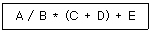
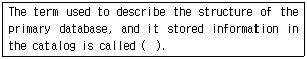
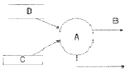
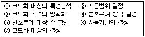
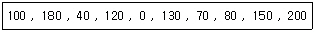
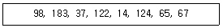
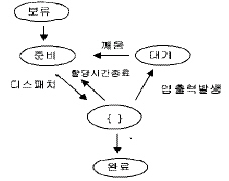
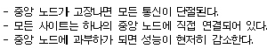
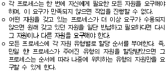

정보처리산업기사 (2003-03-16 기출문제)
1과목: 데이터 베이스
1. 데이터 모델에 관한 설명 중 옳지 않은 것은?
- 관계 데이터 모델은 개체와 관계 모두가 테이블로 표현된다.
- 계층 데이터베이스는 부자관계(parent-childrelationship)를 나타내는 트리 형태의 자료구조로 표현된다.
- 네트워크 데이터베이스는 오너-멤버관계(owner-member relationship)를 나타내는 트리 구조로 표현된다.
- 데이터 모델은 데이터, 데이터의 관계, 데이터의 의미 및 일관성 제약조건 등을 기술하기 위한 개념적 도구들의 모임이다.
(정답률: 38%)

2. 01100011의 2의 보수는?
- 01100110
- 10011101
- 10011111
- 01100111
(정답률: 83%)
3. 스택(stack)의 사용과 거리가 먼 것은?
- 부프로그램(sub program)의 호출
- 산술식 표현
- 운영체제의 작업 스케줄링
- 자료의 후입선출(last-in-first-out) 방법
(정답률: 61%)
4. SQL의 뷰(view)에 대한 장점으로 부적합한 것은?
- 뷰 정의의 변경이 용이하다.
- 논리적 데이터 독립성을 제공한다.
- 접근 제어를 통한 보안을 제공한다.
- 사용자의 데이터 관리를 간단하게 해준다.
(정답률: 57%)
5. 다음과 같은 중위식(infix)을 후위식(postfix)으로 올바르게 표현한 것은?

- + * / A B + C D E
- C D + A B / * E +
- A B / (C D +) * / E +
- A B / C D + * E +
(정답률: 60%)
6. 널(NULL) 값에 대한 설명으로 부적합한 것은?
- 부재(missing) 정보를 의미한다.
- 알려지지 않은 값을 의미한다.
- 영(zero)의 값을 의미한다.
- 널 값은 혼란을 야기할 수 있다.
(정답률: 84%)
7. 내장(Embedded) SQL 에 대한 설명으로 옳지 않은 것은?
- 내장 SQL 문은 EXEC SQL 이 앞 부분에 위치한다.
- SQL 에 사용되는 호스트 변수는 콜론(:)을 앞에 붙인다.
- SQLCODE 의 값이 음수인 경우 경고를 의미한다.
- 내장 SQL 프로그램은 컴파일보다 우선하는 전처리기에 의해 처리된다.
(정답률: 40%)
8. 관계 모델에서의 무결성을 제약하는 방법으로, 기본 키의 값은 널(null)일 수 없다는 무결성 조건은?
- 개체 무결성
- 참조 무결성
- 도메인 제약 조건
- 함수적 종속
(정답률: 79%)
9. 마스터 파일에 기록된 정보 내용을 변경하거나 참조할 경우 일시적인 성격을 지닌 정보를 기록하고 있는 파일을 의미하는 것은?
- transaction file
- report file
- program file
- backup file
(정답률: 70%)
10. 리스트내의 데이터 삽입, 삭제가 한쪽 끝에서 이루어지는 데이터 구조를 무엇이라 하는가?
- 스택(stack)
- 큐(queue)
- 데크(deque)
- 원형 큐(circular queue)
(정답률: 70%)
11. SQL 문장의 기술이 적당치 않은 것은?
- select... from... where...
- insert... on... values...
- update... set... where...
- delete... from... where...
(정답률: 79%)
12. 데이터베이스 설계에 있어 개념 스키마 모델링과 트랜잭션 모델링을 병행적으로 수행하는 단계는?
- 요구분석 설계
- 개념적 설계
- 논리적 설계
- 물리적 설계
(정답률: 54%)
13. 데이터베이스(DBMS)의 필수기능에 해당하지 않는 것은?
- 정의 기능(definition facility)
- 조작 기능(manipulation facility)
- 제어 기능(control facility)
- 사전 기능(dictionary facility)
(정답률: 79%)
14. 다음 문장의 ( ) 안의 내용으로 적절한 것은?

- System structure
- Meta-file
- Meta-data
- System architecture
(정답률: 67%)
15. Each entity has particular properties, what is this?
- fields
- attributes
- domain
- tuple
(정답률: 43%)
16. 한 릴레이션(relation)에 포함되어 있는 튜플(tuple)의 수를 무엇이라 하는가?
- 차수(degree)
- 카디널리티(cardinality)
- 도메인(domain)
- 속성(attribute)
(정답률: 70%)
17. ISAM(indexed sequential access method) 파일의 특징이 아닌 것은?
- 기본 데이터 구역은 데이터 레코드를 저장한다.
- 인덱스 구역은 데이터 구역에 대한 인덱스를 저장한다.
- 독립된 오버플로 구역은 기본 데이터 구역에서 오버플로된 레코드를 저장하는 구역이다.
- 인덱스 영역은 트랙 영역, 실린더 영역, 오버플로 영역으로 구성된다.
(정답률: 58%)
18. 순차적인 선형구조(sequential linear structure)에 해당되는 자료구조는?
- 트리
- 연결 리스트
- 그래프
- 큐
(정답률: 72%)
19. 개념 스키마에 대한 설명은?
- 개개 사용자가 보는 개인적인 데이터베이스에 관한 것이다.
- 범기관적 입장에서 데이터베이스를 정의한 것이다.
- 전체 데이터베이스가 저장되는 방법을 명세한 것이다
- 응용 프로그래머가 접근하는 데이터베이스를 정의한 것이다.
(정답률: 39%)
20. 데이터베이스의 설계과정이 옳은 것은?
- 요구분석-개념설계-논리설계-물리설계
- 요구분석-개념설계-물리설계-논리설계
- 요구분석-논리설계-물리설계-개념설계
- 요구분석-물리설계-개념설계-논리설계
(정답률: 82%)
2과목: 전자 계산기 구조
21. parity bit의 기능으로 옳은 것은?
- error 검출용 비트이다.
- bit 위치에 따라 weight 값을 갖는다.
- BCD code에서만 사용한다.
- error bit이다.
(정답률: 75%)
22. ALU의 목적은?
- OP 코드의 번역
- 어드레스 버스 제어
- 산술과 논리 연산의 실행
- 필요한 기계 사이클 수의 계산
(정답률: 67%)
23. 기억장치에서 instruction을 읽어서 CPU로 가져오는 상태를 무엇이라 하는가?
- Interrupt 상태
- Indirect 상태
- Execute 상태
- Fetch 상태
(정답률: 60%)
24. 인터럽트의 발생 원인이나 종류를 소프트웨어로 판단하는 방법은?
- Polling
- Daisy chain
- Decoder
- Multiplex
(정답률: 64%)
25. DMA의 장점에 해당되는 것은?
- 속도가 느린 메모리가 사용될 수 있다.
- 마이크로프로세서가 데이터 전송을 제어한다.
- 데이터 전송회로가 보다 덜 복잡하다.
- 보다 빠른 데이터의 전송이 가능하다.
(정답률: 55%)
26. 메모리 인터리빙(interleaving) 방법의 사용 목적이 되는 것은?
- 메모리 액세스의 효율 증대
- 기억 용량의 증대
- 입출력 장치의 증설
- 전력 소모 감소
(정답률: 59%)
27. 반도체 기억소자로서 이미 기억된 내용을 자외선을 이용하여 지우고 다시 사용할 수 있는 메모리 소자는?
- static RAM
- dynamic RAM
- EPROM
- PROM
(정답률: 71%)
28. 인스트럭션(instruction) 사이클에 해당되지 않는 것은?
- FETCH cycle
- INDIRECT cycle
- DECODE cycle
- EXECUTE cycle
(정답률: 58%)
29. 전자계산기에서 어떤 특수한 상태가 발생하면 그것이 원인이 되어 현재 실행하고 있는 프로그램이 일시 중단되고, 그 특수한 상태를 처리하는 프로그램으로 옮겨져 처리한 후 다시 원래의 프로그램을 처리하는 현상은?
- 인터럽트
- 다중처리
- 시분할 시스템
- 다중 프로그램
(정답률: 73%)
30. 다음에서 주소 지정 방식이 아닌 것은?
- direct addressing
- temporary addressing
- immediate addressing
- relative addressing
(정답률: 48%)
31. 연산의 처리 결과를 항상 누산기(Accumulator)에 저장하는 어드레스 방식은?
- 0 어드레스 방식
- 1 어드레스 방식
- 2 어드레스 방식
- 3 어드레스 방식
(정답률: 53%)
32. 입출력 장치와 기억장치와의 차이점 설명 중 옳지 않은 것은?
- 기억장치의 동작 속도가 빠르다.
- 입출력 장치는 자율적으로 동작한다.
- 기억장치의 정보 단위는 Word이다.
- 입출력 장치가 착오(error) 발생률이 적다.
(정답률: 37%)
33. 비교(compare) 동작과 같은 동작을 하는 논리 연산은?
- 마스크(mask) 동작
- OR 동작
- 배타적(exclusive) OR
- AND 동작
(정답률: 45%)
34. A 레지스터 내용이 11010100이고, B 레지스터 내용이 10101100일 때 A와 B의 AND 연산 결과는?
- 11010100
- 10101100
- 10000100
- 11111100
(정답률: 66%)
35. 가상기억장치에서 주기억장치로 자료의 페이지를 옮길 때 주소를 조정해 주어야 하는데 이것을 무엇이라 하는가?
- spooling
- blocking
- mapping
- buffering
(정답률: 56%)
36. 트랩(trap)이 발생하는 요인은?
- 0으로 나눌 때
- 정해진 시간이 지났을 때
- 정보 전송이 끝났음을 알릴 때
- 입출력장치가 데이터의 전송을 요구할 때
(정답률: 54%)
37. 다음 BCD code 중 어느 것이 Hardware error를 최소로 하는데 적합한가?
- Excess-3
- Gray
- ASCII
- 8421
(정답률: 47%)
38. 2진수 (1010)2을 그레이 코드로 변환하면?
- (1010)
- (0101)
- (1111)
- (0000)
(정답률: 64%)
39. 인터럽트의 우선순위가 가장 낮은 우선권을 가진 인터럽트의 예는?
- 정전 혹은 기계의 잘못으로 발생한 에러 등의 경우
- 프로그램의 연산자나 주소지정 방식의 잘못으로 인한 인터럽트
- 입출력 장치로부터의 인터럽트
- 조작원으로부터의 인터럽트
(정답률: 38%)
40. 다중 프로그래밍에서는 여러 개의 프로그램이 동시에 병렬로 실행된다. 이 때 어떤 프로그램에 의해 다른 프로그램의 결과가 잘못 쓰여 지는 것을 방지하는 것은?
- 프로그램 보호
- 기계 보호
- 기억 보호
- PSW 보호
(정답률: 29%)
3과목: 시스템분석설계
41. 객체지향 기법에서 데이터와 데이터를 조작하는 연산을 하나로 묶어 하나의 모듈 내에서 결합되도록 하는 것을 무엇이라고 하는가?
- 객체
- 캡슐화
- 다형성
- 추상화
(정답률: 69%)
42. 파일 편성법 중 랜덤 편성법에 대한 설명으로 거리가 먼 것은?
- 처리하고자 하는 레코드를 주소 계산에 의하여 직접 처리할 수 있다.
- 어떤 레코드도 평균 액세스 타임으로 검색이 가능하다.
- 운영체제에 따라서는 키 변환을 자동적으로 하는 것도 있다.
- 키 주소 변환 방법에 의하여 충돌이 발생할 염려가 없으므로 이를 위한 기억 공간의 확보가 필요 없다.
(정답률: 70%)
43. 다음 자료흐름도에서 자료 저장소에 해당하는 것은?

- A
- B
- C
- D
(정답률: 34%)
44. 컴퓨터의 처리 효율이나 화일의 보관 등을 고려하여 같은 화일 형식을 갖는 2개 이상의 화일을 하나의 화일로 통합 처리하는 것을 의미하는 것은?
- 추출(extract)
- 변환(conversion)
- 합병(merge)
- 생성(generate)
(정답률: 81%)
45. 입력 정보의 설계 순서로 옳은 것은?
- 입력 정보의 발생 - 입력 정보의 수집 - 입력 정보의 매체화 - 입력 정보의 투입
- 입력 정보의 발생 - 입력 정보의 수집 - 입력 정보의 투입 - 입력 정보의 매체화
- 입력 정보의 투입 - 입력 정보의 발생 - 입력 정보의 수집 - 입력 정보의 매체화
- 입력 정보의 발생 - 입력 정보의 투입 - 입력 정보의 매체화 - 입력 정보의 수집
(정답률: 55%)
46. 프로세스 설계시 유의해야 할 사항으로 거리가 먼 것은?
- 신뢰성과 정확성을 고려하여 처리 과정을 명확히 표현한다.
- 시스템의 상태 및 구성요소, 기능 등을 종합적으로 표시한다.
- 사용자의 하드웨어와 프로그래밍에 관한 상식 수준을 고려한다.
- 오류에 대비한 체크 시스템도 고려한다.
(정답률: 71%)
47. 프로그램 설계서에 포함되어야 할 사항이 아닌 것은?
- 입/출력 설계표
- 프로그래밍 지시서
- 시스템명
- 요구 명세서
(정답률: 45%)
48. 신뢰성을 평가하는 MTBF(Mean Time Between Failure)는 가동된 평균시간을 나타내며, MTTR(Mean Time To Repair)은 평균 수리 시간을 의미한다. 이 두 가지 척도를 사용하여 신뢰도를 구하는 식을 바르게 나타낸 것은?
- MTTR/MTBF+MTTR
- MTTR/MTBF
- MTBF/MTBF+MTTR
- MTBF/MTTR
(정답률: 46%)
49. 폭포수 모형(Waterfall Model)의 단계를 올바르게 나열한 것은?
- 프로젝트 계획수립-개요 설계 및 상세 설계-구현-테스트-사용자의 요구분석-운용 및 유지보수
- 프로젝트 계획수립-사용자의 요구분석-개요 설계 및 상세 설계-구현-테스트-운용 및 유지보수
- 프로젝트 계획수립-사용자의 요구분석-구현-테스트-개요 설계 및 상세 설계-운용 및 유지보수
- 프로젝트 계획수립-개요 설계 및 상세 설계-사용자의 요구분석-구현-테스트-운용 및 유지보수
(정답률: 70%)
50. 시스템 개발시 문서화의 목적이라고 볼 수 없는 것은?
- 개발 후 유지 보수가 용이하다.
- 문서의 표준화로 효율적인 작업과 관리가 가능하다.
- 시스템의 변경에 따른 혼란을 방지할 수 있다.
- 시스템의 수행 능력을 쉽게 파악할 수 있다.
(정답률: 56%)
51. 색인 순차 편성에서의 각 구역에 대한 설명 중 틀린 것은?
- 트랙 인덱스 구역-기본 데이터 구역의 한 트랙상에 기록되어 있는 데이터 레코드 중에서 최대 키 값과 그 주소가 기록되어 있다.
- 실린더 인덱스 구역-처리해야 할 레코드가 어느 실린더에 기록되어 있는지를 판별할 수 있는 자료를 갖고 있다.
- 마스터 인덱스 구역-실린더 오버플로 구역에 다시 오버플로가 발생할 경우에 대비하여 만들어 놓은 공간이다.
- 기본 데이터 구역-실제 데이터 레코드가 기록된 구역이다.
(정답률: 53%)
52. 모듈 결합도(module coupling)에 대한 설명으로 옳지 않은 것은?
- 모듈 결합도란 두 모듈간의 상호 의존도를 측정하는 것으로서 좋은 설계가 이루어지도록 하기 위해서는 가능한 한 모듈을 독립적으로 생성한다.
- 데이터 결합(data coupling)은 모듈 간에 매개변수를 통해서만 의사소통을 하도록 하여 다른 모듈에게 불필요한 데이터는 전송하지 않도록 한다.
- 스템프 결합(stamp coupling)은 두 모듈이 동일한 자료 구조를 조회하는 경우의 결합성이다.
- 모듈 결합도에서 가장 바람직한 결합도는 내용 결합도(content coupling)이다.
(정답률: 34%)
53. 원시전표 기입의 측면에서 고려할 사항으로 거리가 먼 것은?
- 가능한 기입량을 적게 해야 한다.
- 일정 순서대로 기입될 수 있어야 한다.
- 기입항목은 가능한 길고 자세하게 적어야 한다.
- 기입상 혼란을 일으킬 수 있는 경우에는 전표상에 기입요령을 명시하는 것이 좋다.
(정답률: 59%)
54. IPT 기법의 적용 목적으로 거리가 먼 것은?
- 개발자의 생산성 향상
- 프로그래밍의 표준화 유도
- 개인적인 차이 해소
- 프로그래머의 충원이 용이
(정답률: 52%)
55. 하한치와 상한치를 두어 입력된 항목의 값이 미리 규정된 범위 내에 있는지를 체크하는 방식은?
- 균형체크(balanced check)
- 한계체크(limit check)
- 순차체크(sequence check)
- 형식체크(format check)
(정답률: 65%)
56. 20매로 구성된 디스크 팩(disk pack)에서 한 면에 200개의 트랙(track)을 사용할 수 있다면 실린더는 몇 개가 되는가?
- 200개
- 400개
- 2000개
- 4000개
(정답률: 30%)
57. 도서관에서 도서 정리를 목적으로 만든 것으로 좌측부는 그룹분류에 따르고 우측은 10진수의 원칙에 따라 세분화하는 코드로 추가하기 쉽고, 무한하게 확대가 가능하지만 자리수가 많아지고 기계 처리에 불편한 코드는?
- 그룹분류식 코드(Group classification code)
- 십진코드(Decimal code)
- 구분코드(Block code)
- 합성코드(Combined code)
(정답률: 60%)
58. 시스템의 특성 중 GIGO(Garbage In Garbage Out)는 시스템의 기능 중 어떤 점을 가장 강조한 것인가?
- 입력
- 출력
- 처리
- 제어
(정답률: 29%)
59. 다음 중 코드설계 순서가 맞는 것은?

- ⑦ -> ③ -> ② -> ⑤ -> ⑥ -> ① -> ④
- ⑦ -> ③ -> ⑤ -> ② -> ⑥ -> ① -> ④
- ③ -> ② -> ⑦ -> ⑤ -> ⑥ -> ① -> ④
- ⑦ -> ① -> ② -> ⑤ -> ⑥ -> ③ -> ④
(정답률: 38%)
60. 입력된 자료가 처리되어 일단 출력된 후 이용자를 거쳐 다시 재입력되는 방식으로, 공과금, 보험료 징수 등의 지로용지를 처리하는데 사용되는 입력방식은 무엇인가?
- 턴어라운드 시스템
- 집중 매체화형 시스템
- 분산 매체화형 시스템
- 직접 입력 시스템
(정답률: 67%)
4과목: 운영체제
61. UINX에서 아이노드(inode)에 포함되는 정보가 아닌 것은?
- 마지막으로 수정된 시기
- 소유자가 속한 그룹의 식별
- 파일에 대한 링크의 수
- 파일이 최초에 변경된 시간
(정답률: 51%)
62. 다음 용어 설명 중 옳지 않은 것은?
- 할당시간(time slice) : 한 프로세스가 작업을 모두 마칠 수 있도록 부여한 시간
- 디스패치(dispatch) : 준비 상태에 있는 여러 프로세스 중 프로세스를 선정하여 CPU를 할당
- 문맥교환(context switching) : 한 프로세스에서 다른 프로세스로 CPU가 할당되는 과정
- 교착상태 : 프로세스들이 발생하지 않을 사건을 무한정 기다리고 있는 상태
(정답률: 22%)
63. 현재 헤드의 위치가 50에 있고, 요청 대기 열에는 아래와 같은 순서로 들어 있다고 가정할 때 FCFS(First Come First Served) 스케줄링 알고리즘에 의한 헤드의 총 이동거리는 얼마인가?

- 790
- 380
- 370
- 250
(정답률: 54%)
64. SSTF 스케줄링 알고리즘을 이용할 경우 보기의 요구 큐에 있는 트랙은 어떻게 이동하게 되는가? (단, head 시작위치 : 57)

- 98, 183, 37, 122, 14, 124, 65, 67
- 65, 67, 37, 14, 98, 122, 124, 183
- 37, 14, 65, 67, 98, 122, 124, 183
- 65, 67, 98, 122, 124, 183, 14, 37
(정답률: 48%)
65. 구역성(locality)에 대한 설명으로 옳지 않은 것은?
- 프로세스가 실행되는 동안 일부 페이지만 집중적으로 참조되는 경향을 말한다.
- 시간구역성은 최근에 참조된 기억장소가 가까운 장래에도 계속 참조될 가능성이 높음을 의미한다.
- 공간구역성은 하나의 기억장소가 참조되면 그 근처의 기억장소가 계속 참조되는 경향이 있음을 의미한다.
- 프로세스가 효율적으로 실행되기 위해 프로세스에 의해 자주 참조되는 페이지들의 집합을 말한다.
(정답률: 54%)
66. 유닉스 시스템에서 파일의 내용을 화면에 출력할 때 사용하는 명령어는?
- cat
- finger
- ls
(정답률: 47%)
67. 가상기억장치의 경영에서 어떤 프로세서가 충분한 프레임을 갖지 못하여 페이지 교환이 계속적으로 발생하여 전체 시스템의 성능이 저하되는 것을 무엇이라 하는가?
- 페이징
- 스레싱
- 스와핑
- 폴링
(정답률: 59%)
68. 기존의 CISC 방식의 컴퓨터에 비해 RISC 방식의 컴퓨터에서 괄목적인 변화를 보여준 것은?
- 메모리 관리측면
- 명령어 처리측면
- 자원 관리측면
- 디바이스 관리측면
(정답률: 42%)
69. 주 저장장치관리 전략 중에서 최악적합(Worst fit)을 바르게 설명한 것은?
- 주기억장치 내의 여러 공백 각각에 대해서 프로세스 크기를 차감하여 그 결과 값이 가장 큰 공백에 프로세스를 배치한다.
- 주기억장치 내의 여러 공백 각각들에 대해서 프로세스 크기를 차감하여 그 결과 값이 가장 작은 공백에 프로세스를 배치한다.
- 주기억장치 내의 여러 공백들 중 프로세스 배치가 가능한 첫 번째 공백을 선택하여 배치한다.
- 주저장장치의 여러 공백 중 Random하게 하나를 선택하여 프로세스를 배치한다.
(정답률: 61%)
70. 강 결합 시스템(tightly coupled system)의 특징에 해당하는 것은?
- 프로세서간의 통신은 공유 메모리로 이루어진다.
- 각 시스템은 자신의 운영체제를 가진다.
- 각 시스템은 자신만의 주기억장치를 가진다.
- 각 시스템간의 통신은 메시지 교환으로 이루어진다.
(정답률: 36%)
71. 프로세스에 대한 설명으로 거리가 먼 것은?
- 지정된 결과를 얻기 위한 일련의 계통적 동작을 말한다.
- 목적 또는 결과에 따라 발생되는 사건들의 과정을 말한다.
- 프로세스는 프로그램 자체만으로 이루어져 있다.
- CPU에 의해 수행되는 사용자 및 시스템 프로그램을 말한다.
(정답률: 69%)
72. 운영체제의 역할에 해당하지 않는 것은?
- 사용자와 컴퓨터 시스템 간의 인터페이스 기능을 제공한다.
- 사용자 간의 자원 사용을 스케줄링한다.
- 사용자 간의 데이터를 공유하게 해준다.
- 사용자가 작성한 원시 프로그램을 번역한다.
(정답률: 72%)
73. 다음 프로세서의 상태 전이도에서 괄호 안의 내용으로 가장 적당한 것은?

- 죽임
- 실행
- 취소
- 성공
(정답률: 80%)
74. E. J. Dijkstra가 제안한 방법으로 반드시 상호 배제의 원리가 지켜져야 하는 공유 영역에 대하여 각각의 프로세스들이 접근하기 위하여 사용되는 두 개의 연산 P와 V라는 연산을 통해서 프로세스 사이의 동기를 유지하고 상호배제의 원리를 보장하는 것은?
- synchronization
- context switching
- monitor
- semaphore
(정답률: 61%)
75. 분산 처리 시스템의 네트워크 위상(Topology)에 따른 분류 중 아래 설명에 해당하는 구조는?

- hierachy connection
- star connection
- ring connection
- multi access bus connection
(정답률: 68%)
76. 기억공간을 할당하고 회수하는 작업이 자주 발생함에 따라 디스크의 기억공간이 점차 단편화되어, 파일이 널리 분산되어 있는 블록들에 분산 저장되는 경우, 이런 문제를 해결하기 위한 적절한 방법은?
- allocation
- garbage collection
- fragmentation
- insertion
(정답률: 42%)
77. SJF(Shortest Job First) 스케줄링의 설명으로 옳지 않은 것은?
- 작업이 끝나기까지의 실행시간 추정치가 가장 작은 작업을 먼저 실행시킨다.
- 평균대기 시간을 최소화한다.
- 선점 스케줄링 기법에 해당한다.
- FIFO 보다 평균대기 시간이 작지만 긴 작업의 경우 FIFO 기법보다 더 크고 예측이 더욱 어렵다.
(정답률: 49%)
78. 다중프로그래밍 환경 하에서 용량이 크고 신속한 액세스가 가능한 디스크를 이용하여 각 사용자 프로그램의 출력할 데이터를 직접 프린터로 보내지 않고 디스크에 모았다가 나중에 한꺼번에 출력함으로써 프린터 장치의 공유 및 프린터 처리 속도를 보완하는 기법을 무엇이라 하는가?
- 버퍼링(buffering)
- 스풀링(spooling)
- 다중프로그래밍(multiprogramming)
- 시분할 시스템(time-sharing system)
(정답률: 59%)
79. 다음은 교착 상태 해결 방안 중 어떤 방안을 설명해 놓은 것인가?

- 교착상태의 예방
- 교착상태의 회피
- 교착상태의 발견
- 교착상태의 회복
(정답률: 48%)
80. 보안에 대한 설명 중 옳지 않은 것은?
- 외부보안은 불법 침입자나 천재지변으로부터 시스템을 보호하는 것이다.
- 내부보안은 하드웨어나 운영체제의 내장된 보안 기능을 통해 신뢰성을 유지하고 시스템을 보호하는 것이다.
- 시설보안은 감지 기능을 통해 외부 침입자나 화재, 홍수와 같은 천재지변으로부터의 보안을 말한다.
- 사용자 인터페이스 보안은 사용자의 신원을 운영체제가 확인하는 절차 없이 불법 침입자로부터 시스템을 보호하는 것이다.
(정답률: 52%)
5과목: 정보통신개론
81. 컴퓨터시스템의 중앙처리장치로서 입력장치, 기억장치, 연산장치, 출력장치에게 동작을 명령, 감독, 통제하는 장치는?
- 제어장치
- 주기억장치
- 논리연산장치
- 주변장치
(정답률: 61%)
82. 데이터 링크 계층에서 주로 사용되는 프로토콜은?
- X.21
- X.25
- V.24
- X.26
(정답률: 57%)
83. 다음 중 광섬유케이블의 특징이 아닌 것은 ?
- 전송손실이 극히 적다.
- 접속 및 확장이 불가능하다.
- 전기적으로 무유도성, 무누화이다.
- 광대역성이다.
(정답률: 69%)
84. 중앙에 Host Computer가 있고 이를 중심으로 Terminal들이 연결되는 중앙집중식의 Network 구성 형태는?
- 성(star)형
- 환(ring)형
- 나무(tree)형
- 그물(mesh)형
(정답률: 73%)
85. 패킷 교환망의 특징으로 옳지 않은 것은 ?
- 전송 오류의 정정 불능
- 전송량제어와 전송속도 변환
- 대량의 데이터 전송시 전송 지연
- 표준화된 프로토콜 적용
(정답률: 49%)
86. 정보통신의 설명 내용으로 적합하지 않은 것은?
- 전기통신과 컴퓨터의 정보처리 능력을 부가시켜 정보를 송수신 처리하는 통신
- 컴퓨터나 통신기기 사이에서 디지털 형태로 표현된 정보를 송수신하는 통신
- 전기적인 신호형태의 디지털 데이터만 컴퓨터로 송·수신하는 통신
- 정보처리장치 등에 의하여 처리된 정보를 전송하는 기계장치간의 통신
(정답률: 59%)
87. 다음 중 패킷교환방식에 대한 설명 중 가장 알맞는 것은?
- 접속에는 긴 시간이 소요되나 전송지연은 거의 없다.
- 패킷전송은 음성전송보다 데이터전송에 더 적합하다.
- 전송효율을 높이기 위해 패킷들은 항상 동일한 경로를 통해 전송된다.
- 통신시간, 거리가 비용의 주요 기준이 되며 통신량과는 무관하다.
(정답률: 53%)
88. 데이터통신 시스템의 세 가지 기본 요소로 옳은 것은?
- 단말장치, 전송장치, 통신제어장치
- 단말장치, 통신제어장치, 모뎀
- 모뎀, 전송장치, 통신제어장치
- 단말장치, 다중화장치, 통신제어장치
(정답률: 63%)
89. 데이터 통신에서 컴퓨터가 단말기에게 전송할 데이터의 유무를 묻는 것은?
- Polling
- Calling
- Selection
- Link up
(정답률: 56%)
90. 정보통신에 관한 설명 중 잘못된 것은?
- 정보화 사회를 실현하는 수단으로 컴퓨터와 전기통신의 결합이라고 본다.
- 기본구성 요소는 수신원(Sink), 정보원(Source), 전송매체이다.
- 세계 최초 데이터통신시스템은 국방용을 목적으로한 SAGE 시스템이다.
- 초기 정보전송방식은 온-라인(on-line) 방식이었다.
(정답률: 61%)
91. 다음 설명 중 틀린 것은 ?
- IBM의 SNA는 컴퓨터 간 접속을 용이하게한 체계화된 네트워크 방식이다.
- 본격적인 데이터통신의 시초는 미국의 반자동 방공시스템(SAGE)이다.
- 온라인시스템의 대량보급으로 정보통신을 위한 표준화의 필요성이 줄어들었다.
- 데이터 전송이란 컴퓨터나 데이터 단말에 의해 처리할 또는 처리된 정보의 전송을 말한다.
(정답률: 73%)
92. 통신 프로토콜의 기본요소가 아닌 것은?
- 연결 대상(Linked Object)
- 의미(Semantics)
- 구문(Syntax)
- 순서(Timing)
(정답률: 57%)
93. 보(baud) 속도가 1,200[baud]일 때 쿼드비트(Quad bit)를 사용하는 경우 몇 [bps]인가?
- 1,200[bps]
- 2,400[bps]
- 3,600[bps]
- 4,800[bps]
(정답률: 57%)
94. 시분할방식(Time Sharing System)에 가장 적합한 것은 ?
- 시스템상의 공간적 기능을 분할하는 방식이다.
- 주파수 동기를 맞추어 주는 기능이다.
- 하나의 컴퓨터를 여러 개의 단말기가 공동으로 사용하도록 하는 시스템이다.
- 이동통신에 사용되는 통신방식이다.
(정답률: 54%)
95. 정보통신시스템의 처리방식에 해당되지 않는 것은 ?
- 온-라인(On-line) 처리방식
- 트래픽(Traffic) 처리방식
- 거래(Transaction) 처리방식
- 실시간(time sharing) 처리방식
(정답률: 45%)
96. 다음 인터넷 응용서비스 중에서 가상터미널(VT) 기능을 갖는 것은?
- Ftp
- Gopher
- Telnet
- Archie
(정답률: 48%)
97. OSI 7계층의 데이터링크 계층 기능과 관계가 없는 것은?
- 경로선택
- 오류의 검출 및 복구
- 프레임의 순서제어
- 프레임의 시작과 끝을 구분
(정답률: 31%)
98. 다음 통신회선 구성에 대한 설명 중 틀린 것은?
- 멀티 드롭에 사용되는 터미널은 주소 판단 기능과 데이터 블록을 일시 저장할 수 있는 버퍼를 가지고 있어야 한다.
- 다중화 방식에서 통신회선의 고장시 고장지점 이후의 터미널은 모두 운영 불능에 빠지는 단점이 있다.
- 포인트 투 포인트 방식은 멀티 드롭 방식보다 모뎀의 시설 수량을 줄일 수 있다.
- 멀티 포인트 방식을 멀티 드롭 방식이라고도 한다.
(정답률: 38%)
99. 통신 프로토콜의 기능과 그 기법을 서로 잘못 연결한 것은?
- 에러 제어 - ARQ
- 순서화 - 폴링/셀렉션
- 흐름 제어 - Sliding Window
- 동기 방식 - 비동기식/동기식 전송
(정답률: 39%)
100. 디지털 변복조에 사용되는 방식이 아닌 것은 ?
- 동기편이방식
- 진폭편이방식
- 주파수편이방식
- 위상편이방식
(정답률: 53%)